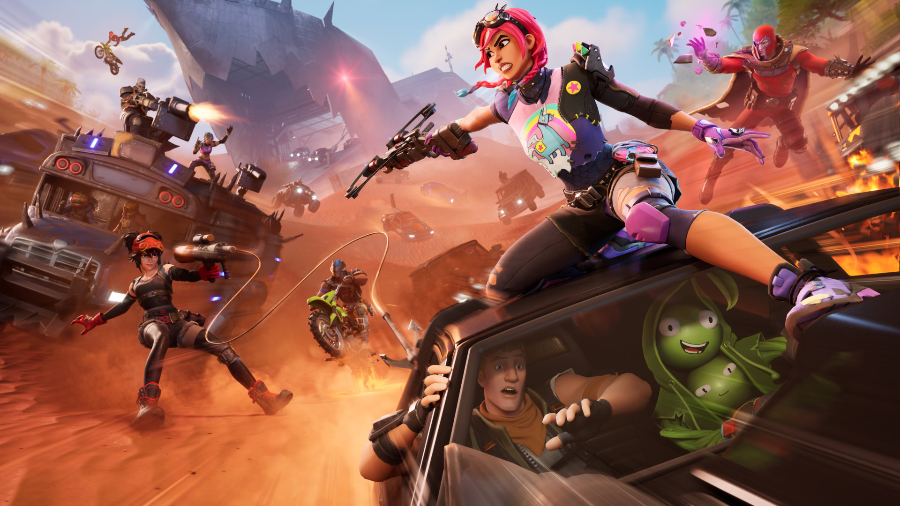
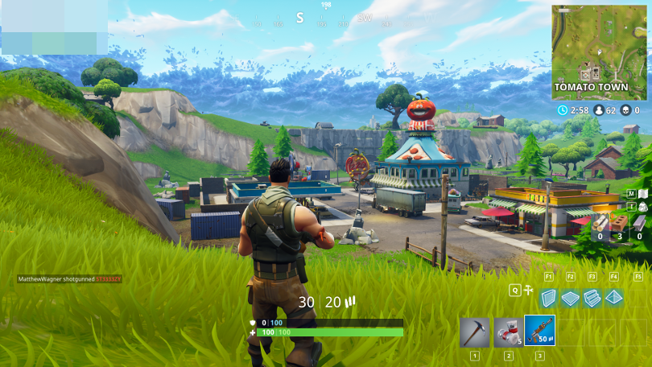

Fortnite
Fortnite es un juego multijugador en línea desarrollado por Epic Games, lanzado inicialmente en 2017.

Concepto y Jugabilidad
- Género: Fortnite es un juego de supervivencia y construcción donde los jugadores pueden cooperar entre sí o competir en modos de juego PvP (jugador contra jugador).
- Modos de Juego:
- Battle Royale: Modo principal donde 100 jugadores son lanzados en un mapa y deben ser el último en pie, mientras recogen recursos, armas y construyen estructuras.
- Salva el Mundo:
Modo cooperativo donde los jugadores deben defenderse de oleadas de enemigos y construir fortificaciones para sobrevivir.
- Construcción: Una característica distintiva de Fortnite es su capacidad para construir estructuras defensivas y ofensivas utilizando recursos recolectados del entorno.
- Actualizaciones y Eventos: El juego se actualiza regularmente con nuevas armas, objetos, modos de juego y eventos temáticos que mantienen la experiencia fresca y emocionante.
Economía y Monetización
V-Bucks: Moneda virtual utilizada en Fortnite para comprar aspectos (skins), bailes (emotes), planeadores (gliders) y pases de batalla.
Modelo de Negocio: Fortnite es gratuito para jugar, pero ofrece compras dentro de la aplicación de V-Bucks que permiten a los jugadores personalizar sus avatares y progresar más rápidamente en el juego.
Comunidad y Popularidad
- Cultura Pop y eSports:Fortnite ha alcanzado un nivel de popularidad masiva, influenciando la cultura popular y siendo un centro de atención en la escena de eSports con competiciones de alto nivel y eventos globales.
- Eventos en Juego: Epic Games ha organizado eventos en el juego que han atraído a millones de jugadores simultáneamente, como conciertos virtuales y colaboraciones con franquicias famosas.
Tecnología y Plataformas

- Disponibilidad: Fortnite está disponible en múltiples plataformas, incluyendo PC, consolas (PlayStation, Xbox, Nintendo Switch), dispositivos móviles (iOS y Android) y Google Stadia.
- Motor Gráfico: Utiliza el motor Unreal Engine 4 de Epic Games, que ofrece gráficos y físicas avanzadas para una experiencia de juego inmersiva.
Impacto Cultural y Educacional
- Fenómeno Cultural: Fortnite ha sido un fenómeno cultural, con referencias en películas, programas de televisión y eventos en todo el mundo.
- Educación: Ha sido utilizado como herramienta educativa para enseñar habilidades de colaboración, estrategia y resolución de problemas en entornos educativos formales e informales.
Crítica y Recepción
- Recepción: El juego ha sido generalmente bien recibido por jugadores y críticos por su jugabilidad innovadora, gráficos coloridos y actualizaciones frecuentes que mantienen la experiencia fresca.
- Controversias: Ha habido controversias relacionadas con el tiempo de juego excesivo, la adicción y el contenido inapropiado, especialmente en jugadores más jóvenes.